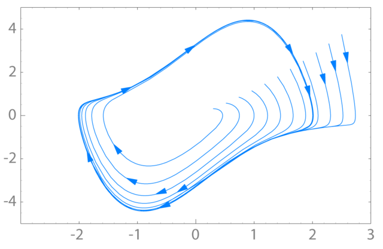

Week 10 - Chaotic Dynamics#
Chaos theory is a branch of science that focuses on the study of systems that exhibit chaotic behavior. These systems are quite sensitive to their initial conditions, meaning that small changes or even errors in measurements can lead to vastly different outcomes. These systems tend have strange couplings and feedback loops, making them very difficult to predict. These systems are nonlinear, meaning that the mathematical tools we bring to bear are often more sophisticated. And, computing is often required to simulate and understand the behavior of these systems.
We will focus on classical chaos, where the systems are deterministic; they follow specific laws or equations. There is no inherent randomness included in the system. In some cases, folks include noise in their system, but this is not required for a system to be chaotic. Even though they are fully deterministic, due to their sensitivity to initial conditions, classical chaotic systems can appear random and unpredictable over time.
Characteristics of Chaotic Systems#
Chaotic systems exhibit several key characteristics that distinguish them from other types of dynamical systems
Sensitive Dependence on Initial Conditions#
One of the hallmark features of chaotic systems is their sensitive dependence on initial conditions. Even tiny differences in the starting state of the system can lead to dramatically different outcomes. While in many cases this means that we cannot predict the long-term behavior of the system, in some cases we can still make accurate short-term predictions. This concept has been abstracted into the popular saying “a butterfly flapping its wings in Brazil can cause a tornado in Texas,” illustrating how small changes can have far-reaching effects. But it is true that in weather systems, small changes in atmospheric conditions can result in significantly different weather patterns.
Nonlinearity#
Chaotic systems are typically nonlinear; simple linear equations and the properties of their solutions are not sufficient to describe their behavior. The couplings of different aspects of the system can lead to feedback loops and interactions that are not simply additive. The mathematical equations governing chaotic systems often involve nonlinear functions, and are thus require different tools to analyze. Moreover, these nonlinear behaviors can change dramatically with small changes in the system parameters. These can lead to bifurcations in the system, where a small change in a parameter can cause a sudden and qualitative change in the system’s behavior. This is just another reason why chaotic systems are so difficult to predict and control
Strange Attractors#
We have seen how systems can have fixed points - both stable and unstable - and we have seen periodic behavior. These are common in many dynamical systems. In our study of the harmonic oscillator, we observed that the system can exhibit periodic behavior when undamped or driven, but we also saw how it can settle to a stable fixed point when damped. As we move to study chaotic systems, we begin to see other kinds of behavior. Systems can have limit cycles - periodic orbits that are stable or unstable. Below we show the limit cycle of the Van der Pol oscillator,
)
One of the most interesting types of attractors in dynamical systems is the strange attractor. These are fractal structures in phase space towards which the system evolves over time. Strange attractors are complex and often exhibit self-similarity, meaning they look similar at different scales. The Lorenz attractor is a famous example of a strange attractor, displaying a butterfly-shaped pattern.
Long-term Unpredictability#
While chaotic systems can be predictable in the short term, their long-term behavior is inherently unpredictable due to the exponential growth of errors in initial conditions. You can think about this in terms of taking a bundle of trajectories that all start with slightly different initial conditions. As time goes on, these trajectories will diverge from one another; they will do so exponentially in every direction. The direction in which they diverge most rapidly is called the Lyapunov exponent. Technically, there’s an exponent for each direction in phase space, but we often just refer to the largest one. If the largest Lyapunov exponent is positive, then the system is chaotic.